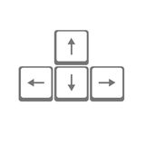

Ingredients List
- 3/4 cup milk
- 2 tablespoons white vinegar
- 1/2 teaspoon baking soda
- 1/2 teaspoon salt
- 1 cup all-purpose flour
- 1 egg
- 2 tablespoons white sugar
- 1 teaspoon baking powder
- 2 tablespoons butter melted
- cooking spray
Directions
- Combine milk with vinegar in a medium bowl and set aside for 5 minutes to "sour".
- Combine flour, sugar, baking powder, baking soda, and salt in a large mixing bowl. Whisk egg and butter into "soured" milk. Pour the flour mixture into the wet ingredients and whisk until lumps are gone.
- Heat a large skillet over medium heat, and coat with cooking spray. Pour 1/4 cupfuls of batter onto the skillet, and cook until bubbles appear on the surface. Flip with a spatula, and cook until browned on the other side.
Game Directions
- use your keyboard direction to move around .
- Collect the
 to discover the ingredients and directions to cook fluffy pancakes.
to discover the ingredients and directions to cook fluffy pancakes.
- When the
 appears collect it to kill some bugs and slow the other ones.
appears collect it to kill some bugs and slow the other ones.
- To start Playing the game press the space key on your keyboard.